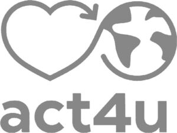

Trade Mark Journal No.2026/010 6 March 2026
WO0000001902283 (18,21,25,40)
Office of origin: France
Date of International Registration:12 December 2025
Date of designation in the UK:
12 December 2025

International priority date claimed: 17 June 2025
(France)
(5156857)
- Class 18
- Handbags; satchels; handbags with handles; handbags, shoulder bags; bags worn around the waist (belt bags); wrist handbags; clutch bags; evening bags; backpacks; reusable shopping bags; reusable shopping (tote) bags; wheeled shopping bags; garment bags for travel; traveling sets (leatherware); vanity cases; suit bags; travel bags; beach bags; gym bags; sports bags; bags for climbers; bags for campers; satchels; document cases; wallets; credit card cases (wallets); purses (coin purses); trunks and suitcases; umbrellas; parasols; leashes.
- Class 21
- Kitchen utensils and containers; tableware; table plates; paper plates; disposable table plates; glass jars [carboys]; meal boxes; bowls; bottles; mugs; mug cosies; coasters neither of paper nor of textile materials; flasks; cups of paper or plastic; drinking bottles; pots; isothermal bags; cups; glasses [receptacles]; drinking glasses.
- Class 25
- Clothing; jeans, dresses, skirts, suits, jackets, trousers, shorts, Bermuda shorts, overalls, combinations, shirts, blouses, t-shirts, sweatshirts, sleeveless pullovers, pullovers; knitwear, gloves, mittens, knitted pullovers, knitted skirts, knitted dresses; vests, tracksuits, coats, parkas, raincoats, petticoats, overcoats, wind-resistant jackets, pelerines, ponchos, bathing suits, underwear, stockings, tights, socks, boxer shorts, leggings, camisoles, scarves, sleep masks, baby dolls, nightgowns, dressing gowns, bathrobes, lingerie, layettes, pajamas, belts, neckties, gloves, stoles, shawls, sashes for wear; hats, beanies, caps, berets, sun hats, visors, straw hats, hoods being clothing.
- Class 40
- Custom printing of patterns or text on handbags, satchels, carry bags, shoulder bags, bags worn around the waist [belt bags], wrist bags, pouches [bags], evening bags, rucksacks, shopping bags, tote bags, wheeled bags, garment bags for travel, traveling sets [leatherware], vanity cases, not fitted, suit bags, travel bags, beach bags, gym bags, sports bags, bags for climbers, bags for campers, school bags, briefcases, wallets, credit card cases [wallets], purses, trunks and suitcases, umbrellas, parasols, leashes, utensils and containers for the kitchen, tableware, plates, paper plates, disposable plates, jars, meal boxes, bowls, bottles, mugs, covers for mugs, coasters not of paper or textile, flasks, cups of paper or plastic, drinking flasks, pots, cool bags, cups, glasses [receptacles], drinking glasses, clothing, jeans, dresses, skirts, suits, jackets, trousers, shorts, Bermuda shorts, overalls, coveralls, shirts, blouses, t-shirts, sweatshirts, sleeveless pullovers, pullovers, knitwear, gloves, mittens, knitted jumpers, knitted skirts, knitted dresses, vests, tracksuits, coats, parkas, raincoats, petticoats, overcoats, wind-resistant jackets, capes, ponchos, bathing suits, underwear, stockings, tights, socks, boxer shorts, leggings, camisoles, scarves, sleep masks, baby dolls, night gowns, dressing gowns, robes, lingerie, layettes, pajamas, belts, neckties, gloves, stoles, shawls, scarves, hats, caps, caps, berets, sun hats, visors, straw hats, balaclavas for advertising or communication purposes.
SOLO INVEST
Representative: LHERMET BRUNO CABINET LHERMET LEFRANC-BOZMAROV, 85 BD MALESHERBES, F-75008 PARIS-8E-ARRONDISSEMENT, FRANCE